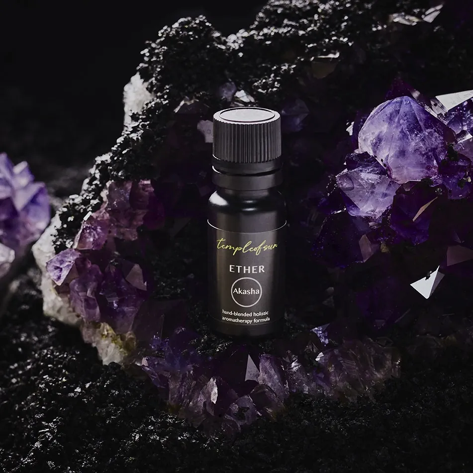
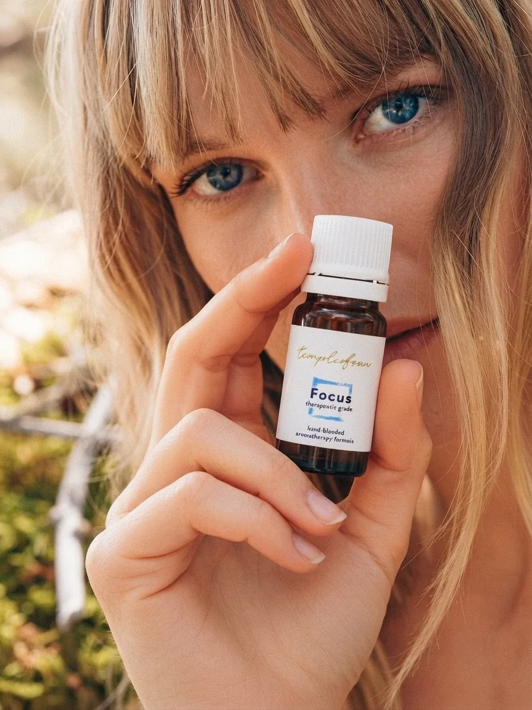

It's time to turn ON
your inner light.
Temple of Sun is the healing practice of Péter Frák: aromatherapist, massage therapist and retreat host, at home between the mountains of Portugal and Hungary.
For more than a decade, Peter has blended ancient wisdom with contemporary technique: hand-blended essential oil formulas, the art of loving touch, and retreats that hold space for you to explore, release and realign. Every blend is made in a meditative state, with intention and prayer. Every session begins by tuning in to you.
with love, Peter aka templeofsun
My story→
Choose your path

The Oils
24 hand-blended, therapeutic-grade formulas, made around feelings, from Focus to Let Go.
Discover the collections→
The Treatments
One-on-one soul alchemy: Ayurvedic massage, aromatherapy and energy work, tuned to you.
Book a session→
The Retreats
Soul Alchemy Retreats in Portugal: seven days to reconnect with your true essence.
Join the journey→“A healer does not heal you. A healer is someone who holds space for you while you awaken your inner healer.”Maryam Hasnaa
What they carry home
“The therapy was without doubt one of the best ones I ever had and I will for sure continue doing the therapies.”
“Péter supported the participants on my retreat with amazing healing experiences. His treatments are more than a massage, it truly is an experience.”
“I'm deeply grateful for the unique massage experience you gave me in Portugal on our retreat! Calling it a massage is a gross understatement. It was incredible!”
“I had a session with Peter and I was taken aback by how powerful it was. Peter is very attentive and listened to what I felt I needed in my life.”
“I participated in Peter's 28-day meditation challenge. I loved starting my mornings with the live group meditations on Zoom, where every day of the week we practiced a different method.”
“I had my best group meditation experiences thanks to Peter. I had the opportunity to learn new meditation techniques that I practice every week since then.”
“De oliën van Peter zijn echt fantastisch. Mijn favoriet is de 'rainbow blend'. Echt een aanrader!”
“Peter, magic is what your touch brought me, I love your energy, thank you ✨”
“Ich habe Peter in Portugal kennengelernt und habe sofort seine wundervolle Seele gespürt. Ich habe noch nie eine so heilende Massage erlebt.”
“Peter was at a retreat with us in Portugal, so I didn't only have two amazing treatments with him, but also met him as the intuitive, kind, funny and caring person he is.”
“Thank you so much for this wonderful treatment. Thank you for creating a space where you were touching my ears as the first person, including myself, in over 18 years.”
“Before the massage he really took time to tune in to what kind of massage I would benefit most from in that moment. It was a journey where I felt safe and seen.”
“Peter is someone who you will follow around the world for his massages, blends and for his caring soul. He has lots of knowledge about aromatherapy.”
“I had a beautiful massage from Peter. It was gentle, tender and opening the heart. He is a very sparkling and authentic being, I am inspired by him.”
“The energetic massage that Peter gave me was the best treatment I have ever had.”
“Peter is such an amazingly knowledgeable and intuitive practitioner, his treatments are incredible.”
“Peter has a magical touch and gives his treatments with honest dedication.”
“Peter's massages are nothing less than perfect, he is a true magician.”
“I loved the treatment, very powerful and caring. The best massage I've ever had.”
“An extraordinary soul with very pleasant energy who took time to hear my story and works like a true professional!”
“I felt completely transported, both physically and spiritually, and my usual daily anxiety was very much improved.”
“A real professional looking at me as a unique person with a body, mind and soul needing harmony and strength.”
“Grateful to meet such a gentle, intelligent, funny, professional, genuine, energized and energizing, lovely caring person.”
“One of the best decisions I ever made was visiting Peter in Vale de Moses; he helped me start my healing process.”
“His openness and kindness struck me from the first moment; I felt seen and experienced a complete way of treatment.”
“From the beginning I felt very comfortable and trusting; his approach is sensitive, careful, connected to nature.”
“That first treatment was mind-blowing: a sensorial and emotional journey your body and mind takes when trusting him.”
“Peter took care of me so lovingly; mixed oils, lit incense, shared meditation practices. I recovered in 3 days!”
“He knew exactly what blends I needed and was very caring and attentive; it was a really amazing experience!”